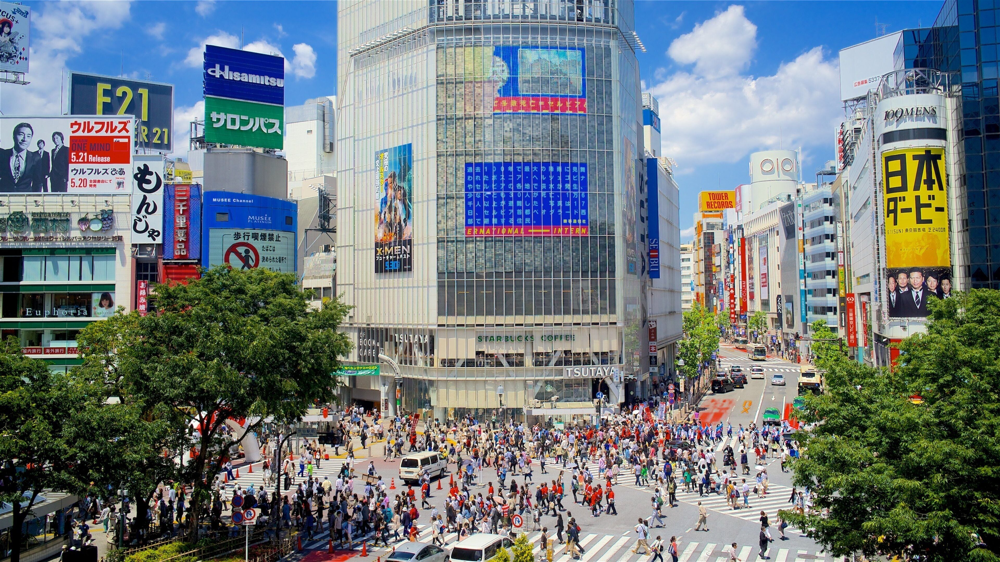
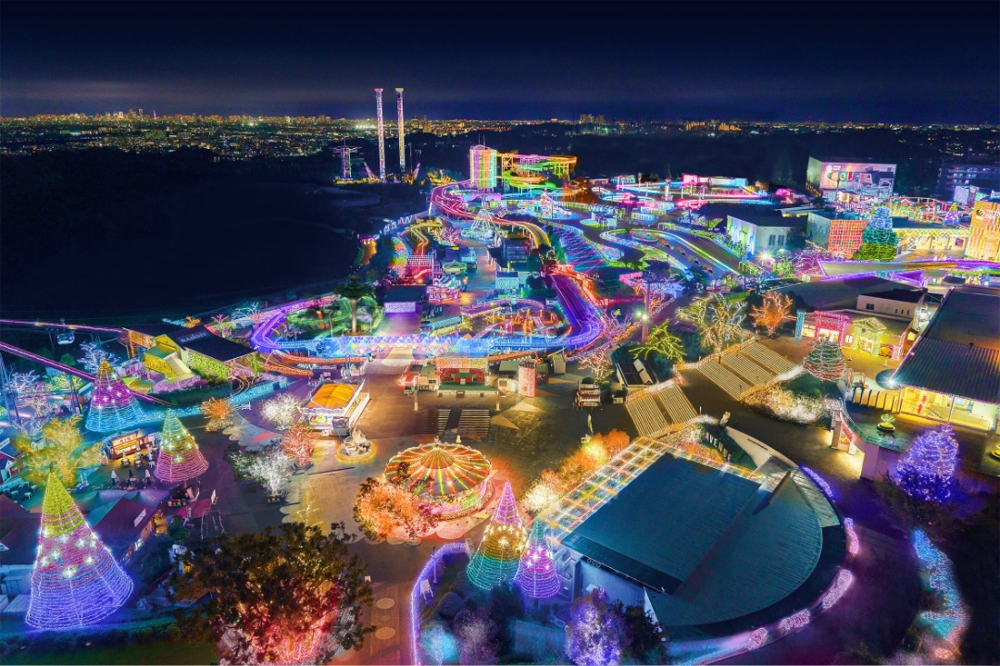
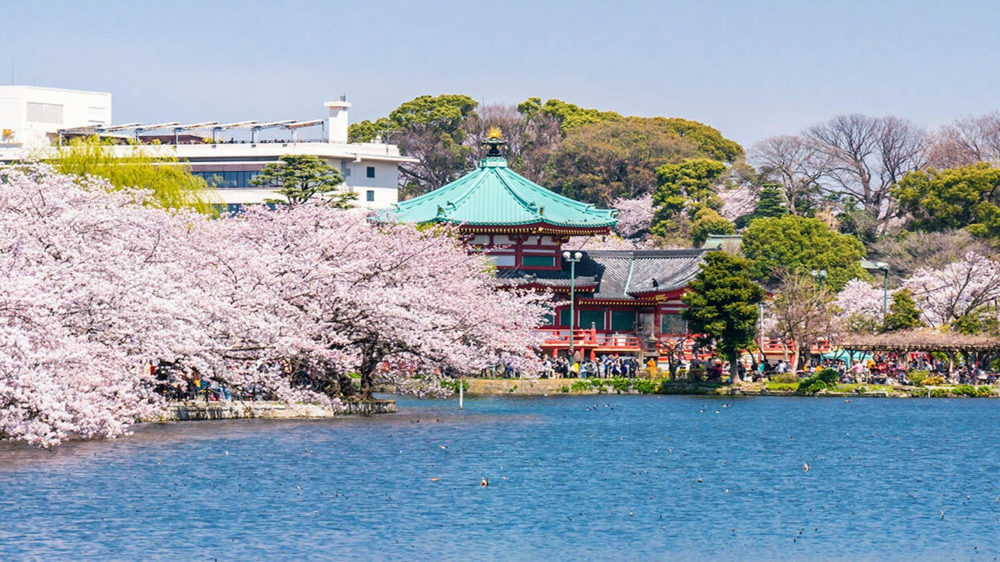

About Tokyo
Tokyo is Japan’s capital and one of the most dynamic cities in the world.
It has a blend of modern technology and traditional culture, offering everything
from neon-lit streets to historic temples and peaceful parks.
Top Attractions
-

Shibuya Crossing
The world's busiest pedestrian intersection shown in many films and magazines. At peak hours, thousands of pedestrians cross from all angles, giving it the "Scramble" nickname.
-

Yomiuriland
Tokyo's largest amusement park that offers cherry blossoms in the spring, pools in the summer, illuminations in the winter, and fun for children and adults alike year-round.
-

Ueno Park
Previously a part of Kaneji Temple, the large public western-style park opened in 1873. There are many cherryblossom trees, and the area is known for having multiple museums.
Photo Gallery
A glimpse of Tokyo’s vibrant city life, nature, and landmarks.
Things to Do
Explore busy shopping districts, relax in scenic parks, visit cultural landmarks,
and enjoy unique food experiences across the city.

{kind=link}
{kind=link}
{kind=link}
{kind=link}
{kind=link}